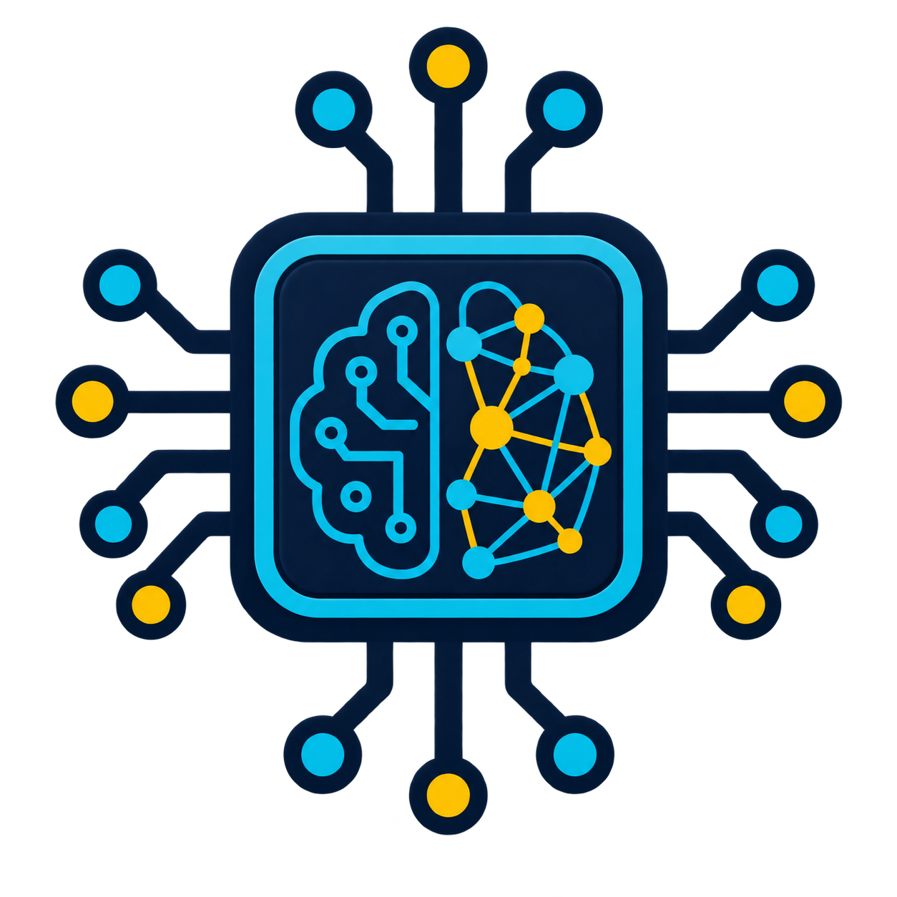

A área que mais combina com você é:

Inteligência Artificial
É uma tecnologia que permite máquinas simularem a inteligência humana, aprendendo com dados, reconhecendo padrões e tomando decisões de forma autônoma.
Você gosta de imaginar novas possibilidades, automatizar tarefas e encontrar formas inteligentes de resolver problemas. Seu perfil combina com quem tem curiosidade sobre como máquinas podem aprender, analisar informações e gerar soluções.